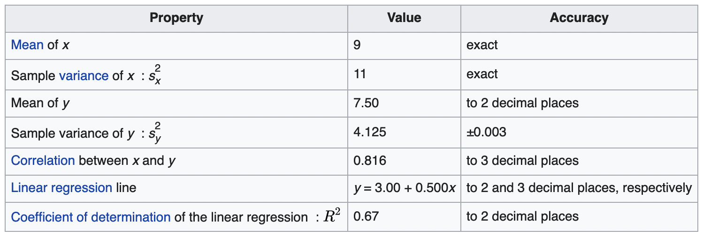
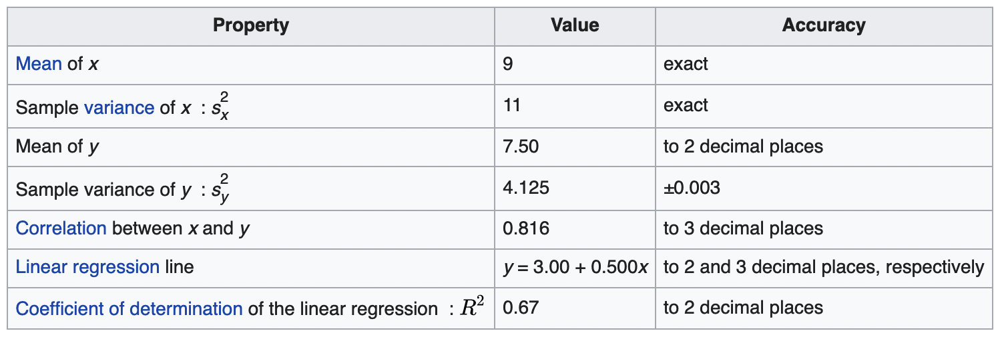

Code
library("datasauRus")
datasaurus_dozen %>%
ggplot2::ggplot(aes(x = x, y = y, color = dataset)) +
ggplot2::geom_point() +
ggplot2::theme_void() +
ggplot2::geom_smooth(method = "lm", color = "gray", fill = "gray", alpha = .5) +
ggplot2::theme(legend.position = "none", text = element_text(size = 30)) +
ggplot2::facet_wrap(~dataset, ncol = 4)